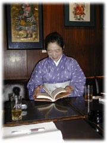
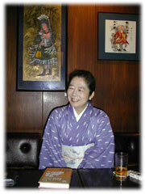

|
──どんなふうにして関所を抜けたかということをはじめ、江戸時代の女性の旅について、とても具体的に記されていますが、相当たくさんの資料にあたられたのでしょうね。
「市町村史の資料編に出ている道中記を、六、七十冊くらいは読んだかしら。それぞれはただ、どこを経由して、どこに泊まって、宿賃がいくらで、っていうようなことが書いてあるだけなんですけど、小さいことの積み重ねというか、読んでると、だんだんわかってくるんですよね、書いてなくても」
──記事の背景がわかるようになったら、面白いんでしょうね。僕だと、読んでも眠くなるばかりのような気がします。金森さんは最初から、面白く読めたんですか？
「いえ、最初はやっぱり文人が書いてる紀行文のほうが面白かったですね。そこから入ったんですけど、でも、江戸時代の文人というと、ほとんど男の人じゃないですか。それに、いずれ出版することを前提にして書いてるから、あまり裏事情なんて書いてないですよね」
──庶民の道中記だと裏事情が見えてくる？
「そうですね。値段が書いてあるっていうのが、すごく面白かったんですよ。現実に旅行に行ったら、支出を書き留めておかないと大変だし、とくに伊勢講の代参なんかだと、次に行く人の情報にもなるわけですよね。必ずつけるっていうものだったようです」
──学者が書いた研究書もずいぶん読まれたと思うんですが？
「ええ、そうした研究書もずいぶん参考にしました。しかし、具体的なところはどうだったんだろうってことになると、たとえば普通の女の人が長期間旅をするというのは、あんまり想定してないっていうか、考えていないんですね。学者はやっぱり江戸の法令はどうだったかっていうのが最初にくるみたいで。だからあんまり女の関所抜けについては書いてなかったですね、私が読んだ限りでは。私は学者じゃないから正統でなくていいわけですよ、いいわけですよって居直っちゃうんだけども(笑）。こういう可能性もあるじゃないかっていうので書ければいいなって思うんです。
それに江戸時代研究っていっても、都市としての江戸が中心になっていて、地方のことはあんまり触れられてない。時代考証事典なんかもよく参考にするんですけど、結局、書いてあるのは江戸が中心だから、じゃあ田舎だとどうなんだろうって、よくわからないことがまだ多いですね」

──女手形について書かれてましたが、こういうことは初めて知りました。
「関所女手形は、関所へ納めてしまうわけですよね。持ち帰るってことがないから、残らない。残ってるものがあるとしたら、それはたまたま写し取っていたものですね。関所と関係ない往来手形はたくさん残っているんです。これは持ち帰ってきますから。だから資料編を見てても、女の関所手形の例は出てこないんです」
──両替の話も面白かったです。もし於以登が使った旅費をすべて銭で持っていってたら八百キロにもなってしまうとか。
「ちゃんと電卓で計算しました（笑）。両替も、学者があんまり触れてなかったことですね。小銭ばかりだとかさばるから大きなお金を持っていく。そうすると一日か二日おきに両替しなければならない。そのたびに手数料を取られます。それに時代や土地によっても銭相場が変わってきますから電卓がないと、もう大変……。それから藩札を出していた国に入るときには、番所で両替して、出るときにまた番所で全国に通用するのにかえなくちゃならないんですよね」
──今回、於以登『参宮道中諸用記』をもとに書こうと思われたのは？
「この資料は、『本荘市史』の資料編に収められていたもので、私が見つけたんじゃなくて、富山大学の深井甚三先生がずいぶん前から注目されていたものなんです。私はけっこう旅が好きで、私がもし江戸時代に旅をしてたらどうなったんだろうって興味があって。それと前に『奥の細道』をやったときに、現実には番所や関所がいっぱいあるのに、あんまり学者は注目してないってこともあって、面白そうだなって思ってはじめたんです。実際、書いてて、すごく面白かった」
──あとがきにも旅好きと書かれてましたが、それが何冊も江戸時代の旅についての本をお書きになった動機でもあるんでしょうか？
「若い頃、よく一人旅をしてたんですよ。それが原点にあるような気はしますね。ヒッチハイクしたり、一人でめちゃくちゃ歩きました。石仏の写真を撮ってたんです。
私まだ二十代だったんですけど、石仏やってるのは、定年退職して立派なカメラ持ってるおじさんがほとんどだったんです。私は母親の中古カメラを使ってたんで、写真じゃ負けるし、撮すだけじゃつまんないしと思って、彫った人のことへと方向を転換したんです。ずいぶんカードを作ったりもしてたんですが、あんまり石工の姿がまとまって見えるところまではいかなかった。もうほとんど諦めてたときに、突然、丹波の佐吉っていう人のことを聞いて、スーッと目の前が開けたような気がしたんです。幕末に亡くなった関西の渡り職人で、石で笛を作った名人と言われた人なんですけどね。
その人について調べて『旅の石工』っていう本を書いたんですけど、そのときに旅のことを勉強したんです。最初は、なんでこうあっちこっち行けるんだろうってことがすごく不思議だったんですよね。芭蕉もそうだったんですけど、とにかく紹介状をもらって行くっていうものなんです。職人と同じだったんです、芭蕉は」
──旅をする石工への興味から、江戸時代の旅に興味が深まっていった？
「ええ、佐吉を通じて、旅に暮らすというのはきついなっていうことを感じたんです。それに、わからないことがいろいろと出てきて。今でも不思議なのは、洗濯。どうやってたんだろうって。たぶん、汚いままでいたんだろうと思うんだけども、肌着ぐらいは洗うんだろうなとも思ったり。でも夕方着いて朝早く出かけるんだから、冬なんて乾かないですよね。替えを持っていったにしても、湿ったまま畳むわけにいかないだろうから、どうしたんだろうって。
デティルにこだわると、今でもわからないことばっかり。江戸時代の旅人は水筒を持って歩かないんですよね。旅姿の絵を見ても、竹筒さえ持っていないようなんです。東海道のように人通りの多いところはいくらでも茶店がありますが、脇街道に入るとそういうわけにもいきません。昔の人は生水にとくに注意していましたから、川の水を飲んだともおもえないし……。煮出したお茶そのものは一文、ニ文でも、心づけっていうのが常識で、十二文が最低だったっていいますからねえ……。
ああ、私、江戸時代に行きたい(笑）。実際に歩いてみたい。もう体力がなくて一日でへたばってるかもしれないけど(笑）。なんとなくわかるような気がしてても、具体的に考えると、じゃあこれはどうなってたのってことがいっぱいあるんですよ」

──そういう興味があるから、資料を読むのも面白いんでしょうね。
「そうですねえ……資料を読んでるのが一番、楽しい。
街道が面白くなっちゃったから、パソコンには、この宿場と宿場の間はどんな景色だったとか、名物の食べ物にいくら払ったとか、そういうのがいっぱい打ち込んであるんですよ。東海道とか中山道なんかは調べつくされてますけど、脇街道も全部自分で、宿場と、その間の距離も出して、どの本によったかっていうのも入れて。関西は弱いですけども、伊勢から東は、たいていの距離は出るようになってます。何かありましたら、どうぞ声をおかけください(笑）」
──じゃあ、これからも旅や街道ということをテーマに？
「やりたいですねえ。もう、本当にやりたくて、うずうずしちゃう。男は簡単に旅ができたわけですから、そんなにワクワクドキドキっていうのがない。やっぱり女の旅が面白いですね。まだわからないことは、いっぱいあるんですけど。ただ、これで江戸時代にワープしても大丈夫かなって」
──当時の人より、関所の抜け方はわかってますよね。
「ええ、もう、女ばっかりのツアーコンダクターやろうかな。料金は少々お高くなりますけど(笑）」
金森敦子（かなもり・あつこ）
1946年新潟県中蒲原郡横越町生まれ。国学院大学文学部卒業。著書に『女流誕生─女能楽師津村紀三子の生涯』（法政大学出版局）、『芭蕉はどんな旅をしたのか』『お葉というモデルがいた』（晶文社）など。『江戸の女俳諧師「奥の細道」を行く』（晶文社）で日本エッセイスト・クラブ賞受賞。
|